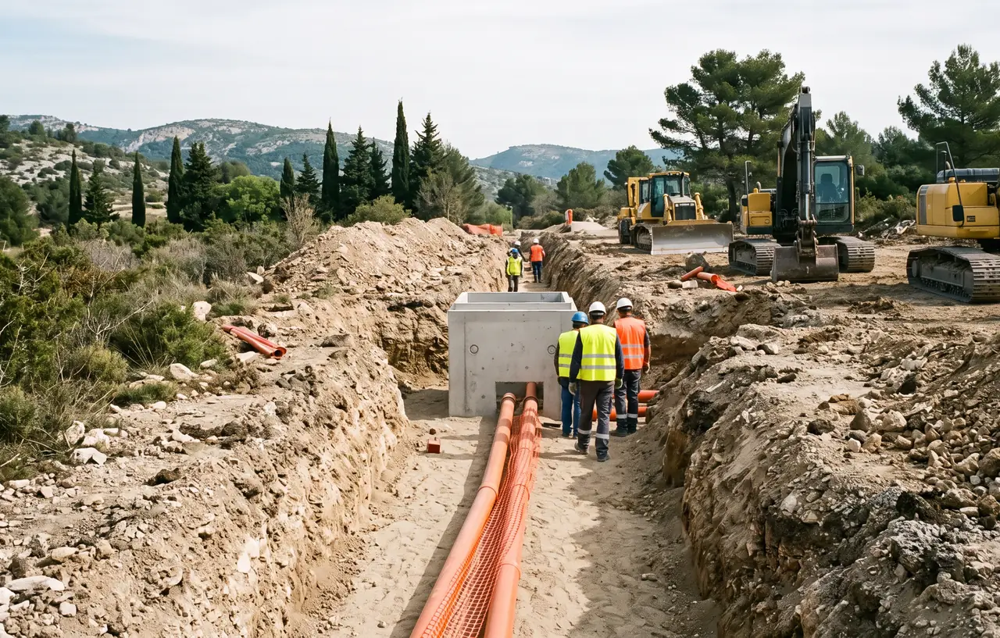
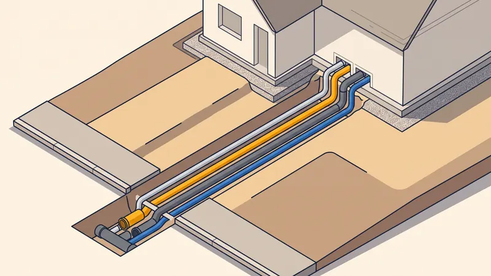

Combien Coûte une Viabilisation de Terrain en 2027 ? Guide Complet
Devis gratuit sous 24 h 07 45 14 20 49 WhatsAppNotre service : viabilisation de terrain
En bref
- Combien coûte la viabilisation d'un terrain ? Pour un terrain isolé, comptez 7 000 à 18 000 euros TTC en 2027 pour l'eau, l'électricité sans extension de réseau, le tout-à-l'égout et le télécom, plus la PFAC (environ 3 000 à 4 500 euros pour 100 à 150 m² de surface de plancher).
- Quels sont les raccordements nécessaires ? Les raccordements indispensables sont : l'eau potable, l'électricité, l'assainissement et les télécommunications. Le gaz est optionnel.
- Qui paie la viabilisation d'un terrain ? Le propriétaire du terrain paie intégralement les frais de viabilisation. En lotissement, les frais sont inclus dans le prix de vente du lot.
Vous venez d'acquérir un terrain non viabilisé et vous vous demandez combien va coûter sa viabilisation ? Le raccordement aux différents réseaux (eau, électricité, assainissement, télécommunications) est une étape obligatoire avant toute construction. Ce guide détaille les coûts de viabilisation en 2027 pour la région d'Aix-en-Provence et le département des Bouches-du-Rhône.

Sommaire
- Coût global de la viabilisation en 2027
- Détail de chaque raccordement
- Le rôle du terrassement dans la viabilisation
- Terrain en lotissement vs terrain isolé
- Les démarches étape par étape
- Spécificités de la viabilisation en PACA
- FAQ : Vos questions sur la viabilisation
- Les erreurs courantes à éviter
- Questions fréquentes
- Pourquoi faire appel à un pro comme STP Terrassement
Coût global de la viabilisation en 2027
Le budget total de viabilisation dépend principalement de la distance entre votre terrain et les réseaux existants. Voici un récapitulatif des coûts par type de raccordement, facture du gestionnaire de réseau et travaux privés compris (TTC) :
| Raccordement | Coût moyen | Organisme à contacter |
|---|---|---|
| Eau potable | 2 000 - 4 500 € (800 - 1 500 € si branchement et compteur existent déjà en limite) | Régie des eaux / SEM |
| Électricité | 2 200 - 5 000 € pour un raccordement courant sans extension (jusqu'à 8 000 € entre 30 et 100 m ; 7 000 - 16 000 € avec extension de réseau) | ENEDIS |
| Assainissement collectif | 3 000 - 9 000 € (partie privée) + PFAC | Commune / Métropole |
| Assainissement individuel | 6 000 - 13 000 € selon la filière | SPANC |
| Gaz de ville | 400 - 2 000 € (indicatif) | GRDF |
| Télécommunications / Fibre | 300 - 1 500 € (génie civil privé) | Orange / Opérateur local |
| Terrassement tranchées communes | 45 - 80 €/ml, compris dans les montants ci-dessus | Entreprise de VRD |
| PFAC (participation à l'assainissement collectif) | 30 €/m² de surface de plancher : 3 000 - 4 500 € pour 100 à 150 m² | Métropole Aix-Marseille-Provence |
| Total viabilisation (eau, électricité, assainissement collectif, télécom) | 7 000 - 18 000 € hors PFAC |
Le total est inférieur à la somme des quatre postes qu'il couvre, car la tranchée commune mutualise le terrassement des différents réseaux. La PFAC est un montant officiel : 30 €/m² de surface de plancher dans la Métropole Aix-Marseille-Provence (délibération du 12 octobre 2023, pour les raccordements depuis le 1er janvier 2024), soit 3 600 € pour une maison de 120 m². Elle n'est pas soumise à la TVA et se paie au raccordement.
Tous nos prix de référence, poste par poste, sont regroupés dans la grille tarifaire terrassement 2027.

Détail de chaque raccordement
Raccordement à l'eau potable
Le raccordement au réseau d'eau potable comprend :
- Frais de branchement auprès du distributeur (régie des eaux ou délégataire) : tarif officiel du service des eaux ; chez Eau de Marseille Métropole, 2 490,83 € TTC pour un branchement neuf de 15 mm avec compteur depuis le 1er juillet 2026, × 1,04 à 1,11 selon la zone
- Compteur d'eau : compris dans ce tarif chez Eau de Marseille Métropole ; ailleurs, inclus ou facturé à part selon le service des eaux
- Tranchée et canalisation sur terrain privé : 300 à 1 500 € selon la distance (tranchée à 25 - 35 €/ml en terre ordinaire, 40 - 70 €/ml en sol rocheux)
Budget complet : 2 000 à 4 500 € TTC pour un nouveau branchement, 800 à 1 500 € seulement si le branchement et le compteur existent déjà en limite (lotissement). À Aix-en-Provence, la distribution de l'eau est gérée par la Société des Eaux de Marseille (SEM). Le délai moyen de raccordement est de 2 à 4 semaines après dépôt du dossier.
Raccordement à l'électricité
ENEDIS (ex-ERDF) gère le réseau de distribution d'électricité. Le coût dépend de la distance au poste de transformation le plus proche :
| Distance au réseau | Budget raccordement (facture ENEDIS + travaux privés, TTC) |
|---|---|
| Moins de 30 m | 2 200 - 3 500 € |
| 30 à 100 m, sans extension de réseau | 3 500 - 8 000 € |
| Avec extension de réseau (le plus souvent au-delà de 100 m) | 7 000 - 16 000 € |
| Plus de 250 m | Sur devis (possibilité d'extension réseau) |
ENEDIS applique un barème réglementé : depuis le 28 octobre 2026 (barème V8), le branchement individuel d'une maison neuve est facturé 1 903,68 € TTC après la réfaction de 40 %, et depuis la loi APER l'extension du réseau est facturée au demandeur. Le branchement comprend la pose du coffret en limite de propriété, le câble jusqu'au compteur et la mise en service.
Raccordement à l'assainissement
Deux options selon la disponibilité du réseau collectif :
- Assainissement collectif (tout-à-l'égout) : raccordement obligatoire si le réseau passe devant votre terrain. Coût : 3 000 à 9 000 € pour la partie privée, plus la PFAC (ex-PRE) de 30 €/m² de surface de plancher dans la Métropole Aix-Marseille-Provence, soit 3 600 € pour 120 m² ; 6 000 à 16 000 € en budget complet avec le branchement public. Voir notre guide complet sur le prix du raccordement au tout-à-l'égout.
- Assainissement individuel : si aucun réseau collectif n'est disponible, installation d'une fosse toutes eaux, micro-station ou filtre compact. Coût : 6 000 à 13 000 € selon la filière choisie.
Raccordement au gaz de ville
Le raccordement au gaz est facultatif et dépend de la proximité du réseau GRDF. Avec la tendance à l'électrification (pompes à chaleur, panneaux solaires), de plus en plus de constructions neuves en région PACA se passent du gaz.
- Branchement standard (moins de 30 m) : 400 à 1 000 €
- Extension de réseau : 1 000 à 2 000 € (parfois plus selon la distance)
Raccordement télécom et fibre
Le raccordement aux télécommunications (téléphone fixe, internet, fibre optique) est l'un des moins coûteux. La pose de la gaine technique (génie civil privé) représente 300 à 1 500 € ; le raccordement à la fibre par l'opérateur est gratuit jusqu'à 100 m. Le déploiement de la fibre optique en région Aix-en-Provence est largement avancé, ce qui facilite les raccordements.
Le rôle du terrassement dans la viabilisation
Le terrassement est un poste transversal à tous les raccordements. Pour optimiser les coûts, il est judicieux de regrouper tous les réseaux dans une tranchée commune (multi-réseaux) :
- Tranchée commune : une seule tranchée accueille les gaines électriques, la conduite d'eau, les canalisations d'assainissement et le fourreau télécom
- Économie : 30 à 50 % d'économie sur le terrassement par rapport à des tranchées séparées
- Normes de distance : respecter les écartements réglementaires entre réseaux (20 cm minimum entre eau et électricité)
Chez STP Terrassement, nous coordonnons l'ensemble des travaux de VRD pour mutualiser les tranchées et réduire vos coûts.
Terrain en lotissement vs terrain isolé
| Critère | Terrain en lotissement | Terrain isolé (diffus) |
|---|---|---|
| Viabilisation incluse | Oui (dans le prix du lot) | Non (à la charge du propriétaire) |
| Coût supplémentaire | Raccordements internes seulement | Tous les raccordements |
| Budget viabilisation | 1 000 - 3 000 € + PFAC | 7 000 - 18 000 € + PFAC |
| Délai | 2 - 4 semaines | 3 - 6 mois |
Les démarches étape par étape
- Obtenir le certificat d'urbanisme : ce document de la mairie indique les réseaux disponibles et les conditions de raccordement
- Contacter chaque concessionnaire : ENEDIS, régie des eaux, GRDF, opérateur télécom, service assainissement
- Obtenir les devis de raccordement : chaque organisme fournit un devis avec les conditions techniques et financières
- Faire réaliser les tranchées : confier le terrassement à un professionnel VRD pour optimiser les coûts (tranchée commune)
- Coordination des intervenants : planifier les passages des différents concessionnaires pour tirer les réseaux
- Contrôle de conformité : vérification des branchements avant remblaiement
- Remblaiement et remise en état : comblement des tranchées et restauration du terrain
Viabilisation de Terrain : Devis Gratuit
STP Terrassement prend en charge le terrassement et la coordination VRD pour la viabilisation de votre terrain à Aix-en-Provence.
Pressé ? 07 45 14 20 49 ou WhatsApp
Spécificités de la viabilisation en PACA
- Sols rocheux : les sols calcaires autour d'Aix-en-Provence augmentent le coût de terrassement des tranchées de 60 à 100 % (40 à 70 €/ml contre 25 à 35 €/ml en terre ordinaire)
- Terrains en pente : les collines provençales imposent parfois des stations de relevage pour l'assainissement
- Zones protégées : les règles d'urbanisme strictes (PLU, ABF) peuvent conditionner le tracé des réseaux
- Réseau d'eau : la gestion de l'eau en Provence, région soumise à des sécheresses estivales, fait l'objet d'une attention particulière
FAQ : Vos questions sur la viabilisation
Combien coûte la viabilisation d'un terrain ?
Pour un terrain isolé, comptez 7 000 à 18 000 euros TTC en 2027 pour l'eau, l'électricité sans extension de réseau, le tout-à-l'égout et le télécom, plus la PFAC (environ 3 000 à 4 500 euros pour 100 à 150 m² de surface de plancher). Le montant dépend de la distance aux réseaux, de la nature du sol et du nombre de raccordements nécessaires ; une extension du réseau électrique porte à elle seule le poste électricité à 7 000 à 16 000 euros.
Quels sont les raccordements nécessaires ?
Les raccordements indispensables sont : l'eau potable, l'électricité, l'assainissement et les télécommunications. Le gaz est optionnel.
Qui paie la viabilisation d'un terrain ?
Le propriétaire du terrain paie intégralement les frais de viabilisation. En lotissement, les frais sont inclus dans le prix de vente du lot.
Combien de temps dure la viabilisation ?
Comptez 3 à 6 mois pour une viabilisation complète, incluant les démarches administratives et les travaux de terrassement.
Pour vérifier les règles applicables : le guichet des déclarations de travaux à proximité des réseaux (DT-DICT) et le permis de construire sur Service-Public.fr.